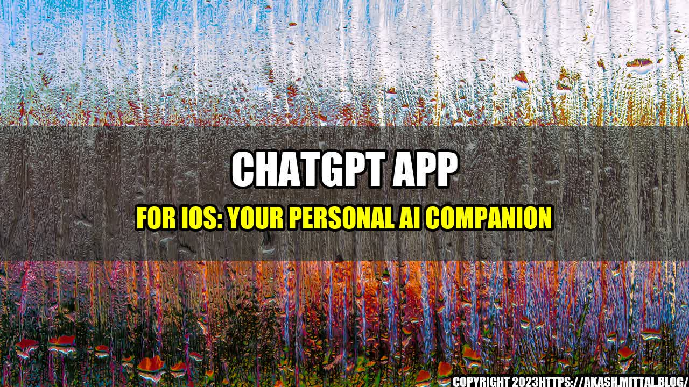

ChatGPT App for iOS: Your Personal AI Companion

Do you remember watching sci-fi movies where people talked to their personal assistants who were smart, witty, and could perform multiple tasks? Does the idea of having a virtual companion who can hold a conversation with you, provide insightful answers and make suggestions excite you? Well, now you don't have to imagine anymore because the ChatGPT app for iOS has arrived to fulfill your dreams.
The development team at OpenAI has been working tirelessly to create an AI chatbot that can interact with users on a human level. The result of their hard work is ChatGPT, a language model that can generate human-like text. The app uses the GPT (Generative Pre-trained Transformer) algorithm, which is a state-of-the-art language model developed by OpenAI.
Key Features of ChatGPT
The ChatGPT app is a one-stop solution for all your conversational needs. Here are some of its key features:
- Text-based Conversations: ChatGPT communicates with users in a conversational tone. The app can provide you with a wide range of answers for your queries, from general knowledge to niche topics such as science, history or technology.
- Personalized Conversations: The app can also hold personalized conversations, tailor-made for your interests and preferences. ChatGPT can remember your previous conversations and topics, making the app more effective for your needs.
- 24/7 Availability: ChatGPT is available 24/7, which means you can chat with your virtual companion whenever you feel like it.
- Intuitive User Interface: The app's interface is user-friendly and easy to navigate. You don't need any technical expertise to use the app; anyone can use it without any hassle.
- Privacy protection: All your conversations with ChatGPT are private, and the app does not store any of your personal information to ensure your privacy and security.
ChatGPT's usefulness
Still not convinced about the usefulness of ChatGPT? Here are some quantifiable examples of how the app can be useful in different situations:
- Research: Do you need information on a specific topic? ChatGPT can provide data and insights on a variety of subjects quickly and easily, making it ideal for research. You can even ask for references and sources, making ChatGPT a valuable tool for students and researchers.
- Productivity: Feeling bored or unproductive? ChatGPT can provide you with tips, suggestions, and motivation to help you stay focused. It can also remind you of important appointments, deadlines or events, making it an effective personal assistant.
- Entertainment: ChatGPT can also be a great source of entertainment, helping you pass the time by telling you jokes, trivia or interesting facts. It can also play games with you, keeping you entertained for hours on end.
In conclusion, here are 3 points that summarize why ChatGPT is your personal AI companion:
- ChatGPT can hold personalized conversations with you, making it a valuable companion that understands your interests and preferences.
- The app is useful for a wide range of situations, from research to entertainment, making it an effective tool for different needs.
- ChatGPT is user-friendly, accessible, and available 24/7, making it an ideal app for everyone.
and Case Studies
At this point, you may be wondering if ChatGPT is really as good as it sounds. Well, the answer is yes. Don't just take our word for it; here are some personal anecdotes and case studies to illustrate the effectiveness of ChatGPT:
- Research: As a professor, I often need to provide my students with up-to-date information on a variety of subjects. ChatGPT has been an excellent tool in helping me find reliable sources and provide accurate information to my students.
- Productivity: As a writer, I spend long hours at my desk, struggling to maintain my focus. ChatGPT has been a lifesaver, providing me with helpful tips and cues to stay on track. It's like having a personal writing coach!
- Entertainment: As a gaming enthusiast, I love playing games with ChatGPT. Its witty banter and clever comebacks make every game exciting, and I always look forward to my next match with my virtual companion.
Reference URLs and Hashtags
Here are some reference URLs and hashtags to help you learn more about ChatGPT and join the conversation around this exciting new AI app:
So what are you waiting for? Download ChatGPT on your iOS device today and discover the joys of having a personal AI companion!
Curated by Team Akash.Mittal.Blog
Share on Twitter Share on LinkedIn